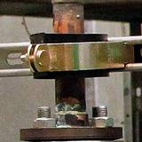 | Building technologies (9068735082), pipe clamp.jpg | Oak Ridge National Laboratory | cc-by-2.0 |
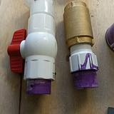 | Water Ram Repair PVC Cement.jpg | Jshin722 | cc-by-sa-3.0 |
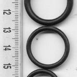 | O-rings.jpg | ver página do arquivo | PD-user-en |
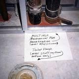 | Toilet flange.jpg | Achim Hering | PD-self |
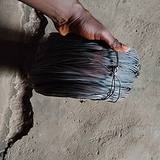 | Binding wire for construction work in Awka.jpg | Johnnybam | cc-by-sa-4.0 |
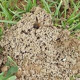 | Alaverdi - sand pile.jpg | Tiia Monto | cc-by-sa 3.0 |
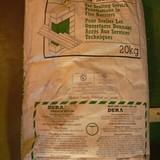 | Durastop firestop mortar bag.jpg | Achim Hering | GFDL |
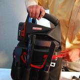 | Craftsman shop vac (4600830266).jpg | Charles & Hudson | cc-by-sa-2.0 |
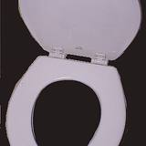 | Toilet seat 600x980.jpg | Rfc1394 (talk) | GFDL |
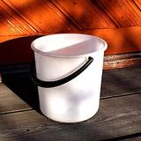 | White plastic bucket.jpg | Santeri Viinamäki | cc-by-sa-4.0 |
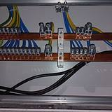 | Dornbirn-modern main earthing busbar (copper)-01ASD - Kopie.jpg | Asurnipal | cc-by-sa-4.0 |
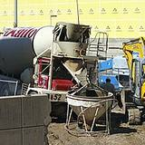 | Cement mixer 3.jpg | Michael Pereckas from Milwaukee, WI, USA | cc-by-sa-2.0 |
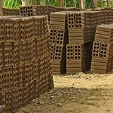 | Clay being dried before going to furnace.jpg | Jonathan Wilkins | cc-by-sa-3.0 |
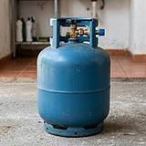 | Botijão de gás.jpg | Robsonchito | cc-zero |
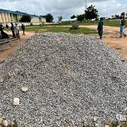 | Gravel Pile.jpg | Al-muhaqqiqi | cc-zero |
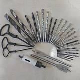 | A variety of drill bits.jpg | Mauro Cateb | cc-by-sa-4.0 |
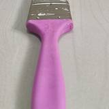 | Paint brush image.jpg | Akshaya govindasamy | cc-by-sa-4.0 |
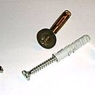 | Tasselli wall plug.jpg | Alessio Sbarbaro | cc-by-sa-2.5 |
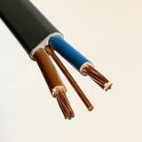 | 'Twin and Earth' electrical cable. BS 6004, 6mm².jpg | Alistair1978 | cc-by-sa-4.0 |
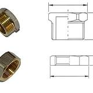 | Pipe cap.jpg | Луносвет | cc-by-sa-3.0 |
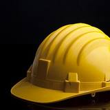 | Yellow hard hat.jpg | רנדום | cc-by-sa-3.0 |
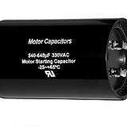 | Motor-Start-Capacitor.jpg | Elcap | Cc-zero |
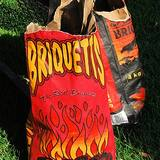 | Charcoal briquettes in bags.jpg | Ossewa | cc-by-sa-4.0 |
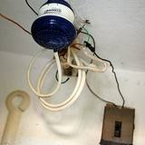 | Electric Shower, Nebaj Guatemala.jpg | Gabriel White | cc-by-sa-2.0 |
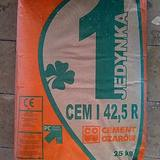 | Portland cement CEM I 42,5 R (bag).jpg | Krugerr | cc-by-sa-4.0 |
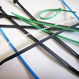 | Cable ties.jpg | Silverxxx (talk) | ver página do arquivo |
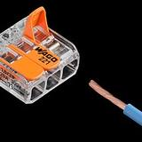 | Wago 221-413 splicing connector with stranded wire.jpg | Lucasbosch | cc-by-sa-4.0 |
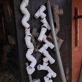 | PVC plumbing fittings in Awka.jpg | Johnnybam | cc-by-sa-4.0 |
 | PvcElbows.JPG | REisemann3937 | cc-by-sa-3.0 |
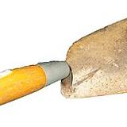 | Masons trowel.jpg | Mike Lupinacci | GFDL |
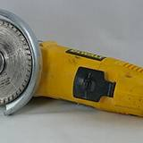 | Grinder diamond blade.jpg | Hustvedt | cc-by-sa-3.0 |
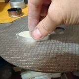 | Using an abrasive disc.JPG | Mauro Cateb | cc-by-sa-3.0 |
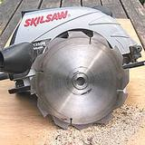 | Cirkelzaagblad (Circular saw blade).jpg | Rasbak | GFDL |
| Circuit breaker 2 pole on DIN rail.JPG | Kae | cc-by-sa-3.0 |
| Residual current device (RCD).jpg | Diermaier | ver página do arquivo |
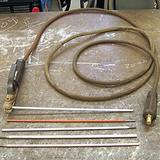 | Arc welding electrodes and electrode holder.triddle.jpg | ver página do arquivo | PD-user-en |
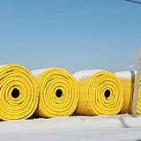 | Polyethelene corrugated drainage pipe.JPG | Dwight Burdette | cc-by-3.0 |
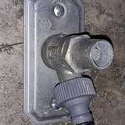 | Garden hose connection.jpg | Elgull | cc-by-sa-4.0 |
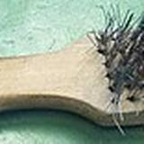 | Staalborstel.jpg | Martink | PD-user-w |
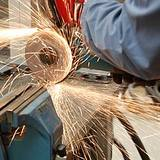 | Let the Sparks Fly - Makita 9557NB Angle Grinder (4071725314).jpg | Mark Hunter | cc-by-2.0 |
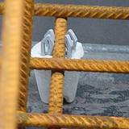 | Concrete spacer.jpg | CMMNA | cc-by-sa-3.0 |
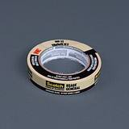 | A Roll of Masking Tape (47352607761).jpg | HireAHelper | cc-by-2.0 |
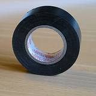 | Electrical-tape black.jpg | Jonas Bergsten | PD-user |
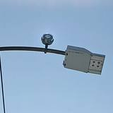 | Mystery device on streetlight - Arlington, MA.jpg | Daderot | cc-zero |
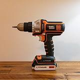 | Black and Decker 20-Volt Power Drill (49112921413).jpg | Tony Webster from Laramie, Wyoming, United States | cc-by-2.0 |
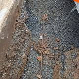 | Ground rod installation.jpg | Anibal Maysonet | cc-by-sa-4.0 |
 | White light switch.jpg | Santeri Viinamäki | cc-by-sa-4.0 |
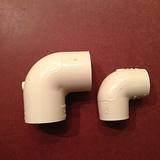 | PvcElbows.JPG | REisemann3937 | cc-by-sa-3.0 |
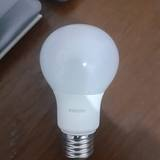 | Philips LED bulb.jpg | Vitaium | cc-zero |
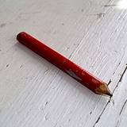 | Red carpenter pencil.jpg | Santeri Viinamäki | cc-by-sa-4.0 |
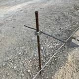 | String Line Attachment.jpg | Estabiano | cc-zero |
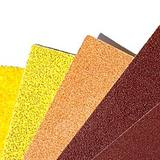 | Schleifpapier verschiedene Sorten.jpg | Simon Eugster – Simon / ?! 12:43, 14 May 2008 (UTC) | GFDL |
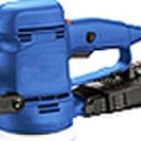 | Orbital Sander - unbranded.jpg | National Institute for Occupational Safety and Health | PD-USGov-HHS-NIOSH |
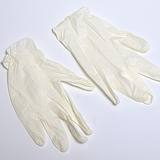 | Latex gloves-pair.jpg | ver página do arquivo | cc-by-sa-3.0 |
| Fitting for piping PVC 1,5", Class C (5363882922).jpg | SuSanA Secretariat | CC-BY-2.0 |
| Leather work gloves composite P1010224 copy.jpg | el cajon yacht club | cc-by-2.0 |
| Propane torch soldering copper pipe.jpg | neffk (talk) | cc-by-2.0 |
| Claw hammer.JPG | ایران پتک | cc-by-sa-4.0 |
| Half-mask-respirator.jpg | Another-anon-artist-234 | cc-zero |
| Chamäleon putty (Chamäleon brand).jpg | Tekst takumi | cc-by-sa-4.0 |
| Stihl MS 192C chainsaw 20190326.jpg | Santeri Viinamäki | cc-by-sa-4.0 |
| Pipe nipple.jpg | Луносвет | cc-by-sa-3.0 |
| Mobil 1 motor oil.jpg | ver página do arquivo | PD-self |
| Screws.jpg | Brianiac | PD-user-en |
| Hex-head-self-drilling-screw-1614969 340.png | Zheer16 @ Pixabay | ver página do arquivo |
| Bathroom sink with overflow hole circled.jpg | Thryduulf | PD-self |
| NBR 14136 plugs and outlet.jpg | Fasouzafreitas | cc-by-sa-3.0 |
| Paint roller 2.jpg | Maggie | cc-by-2.0 |
| White light switch.jpg | Santeri Viinamäki | cc-by-sa-4.0 |
| Wheelbarrow wheel.JPG | TheOminousDonut | cc-by-sa-4.0 |
| Nails Flat Head Steel Industry 4607200 Edited 2020 (49931938461).jpg | Tool Dude8mm | cc-by-2.0 |
| Double-headed nail.agr.jpg | ArnoldReinhold | cc-by-sa-4.0 |
| Knapsack sprayer.jpg | Safapalanadan94 | cc-by-sa-4.0 |
| Stab-Lok circuit breaker panel interior .jpg | Repeater-reclaim | cc-by-sa-4.0 |
| Blind rivet notches.jpg | ver página do arquivo | PD-self |
| Reducer.jpg | Ryan.counts4741 | cc-by-sa-3.0 |
| LED floodlights.jpg | Santeri Viinamäki | cc-by-sa-4.0 |
| Power strip.jpg | User1779637 | cc-by-sa-4.0 |
| Brush cutter 02.JPG | Feťour | PD-self |
| Porcelain-insulator.jpg | Kreuzschnabel | ver página do arquivo |
| Jackhammer.jpg | User Josh Parris on en.wikipedia | PD, PD-user-wikimedia |
| Silikonpistole (fcm).jpg | , Baden-Baden | ver página do arquivo |
| Motion sensor light.jpg | Santeri Viinamäki | cc-by-sa-4.0 |
| Jet table saw.jpg | Mitch Barrie | cc-by-sa-2.0 |
| Circular saw.jpg | ver página do arquivo | GFDL |
| Tile saw.jpg | Hustvedt | cc-by-sa-3.0 |
| Adjustable Hacksaw.jpg | Zkabirkhan | cc-zero |
| Leaking PVC Pipe Under Sink - P Trap (52842956605).jpg | Tony Webster | cc-by-2.0 |
| Stacked Lumber (53832000192).jpg | Tony Webster | cc-by-2.0 |
| Tés de plomberie.jpg | Mini.fb | cc-zero |
| Brass crimp-terminal female spade electrical connector.jpg | Suyash Dwivedi | cc-by-sa-4.0 |
| Behr paint bucket.jpg | Jordano53 | cc-by-sa-4.0 |
| Spray Paint Can.png | Sustainableuog | cc-by-sa-3.0 |
| Tomada Brasileira - NBR 14136, 20A, 250V.jpg | Fasouzafreitas | cc-by-3.0 |
| Delta Faucet - Brizo - 4887377646.jpg | Charles & Hudson | cc-by-sa-2.0 |
| B&Q Tape Measure.jpg | ver página do arquivo | cc-by-4.0 |
| Bundled PVC pipes for drainage in Awka.jpg | Johnnybam | cc-by-sa-4.0 |
| New pvc pipe vs cut pvc pipe.JPG | MauryMartinez | cc-by-sa-3.0 |
| Sink drain.jpg | Santeri Viinamäki | cc-by-sa-4.0 |
| Bottle of Paraquat as pesticide, at Changhua 20110829.jpg | Lordcolus | cc-by-2.0 |
| A bunch of rebar up close.jpg | W.carter | cc-by-sa-4.0 |